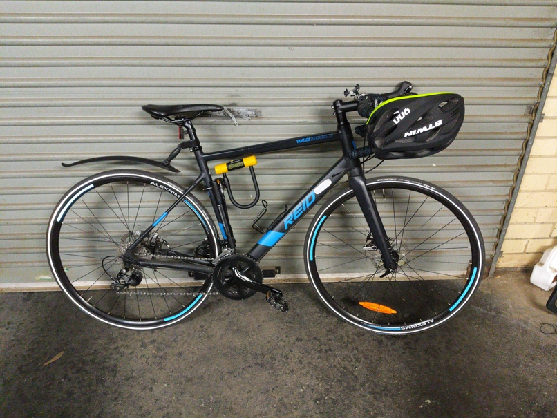

Things
Last Updated: 08.02.2021
Communication
I use the following chat services (in order of personal preference):
- Signal
- IRC on irc.freenode.net (rny @ #grapheneos or #grapheneos-offtopic or ##unimelb)
Bitcoin
You know what Bitcoin is, but how does it work?. 3blue1brown (Grant Sanderson) on Youtube explains it best. How secure is Bitcoin? A numerical explanation, again by 3blue1brown (Grant Sanderson) on Youtube.
Services and Hardware
I self-host a good number of services on my inexpensive private cluster of ARM single-board computers (SBCs) and a x86 NUC. My cluster machine composition is as follows:
- Odroid XU4 (armv7l running ArchlinuxARM)
- Odroid N2 (aarch64 running Ubuntu)
- Kobol Helios64 (aarch64 running Armbian)
- Gigabyte Brix S NUC (x86_64 running Archlinux)
My setup involves setting Docker Swarm and each service is then spun up using a docker-compose.yml file, therefore all my services are Linux distribution-agnostic.
Unfortunately, I need to stick with specific distributions for specific hardware due to poor/slow kernel maintainenance by the hardware vendors.
For storage, I have disk drives physically mounted in one of my nodes and I share the NAS using NFS with LAN.
All my devices operate within the docker swarm network which is encrypted within my LAN and the only ingress/egress network interfaces are an exposed HTTPS port and wireguard UDP port whitelisted on my router.
I use Superloop as my ISP. They have relatively good and reliable international transit compared to other past ISPs I have used (i.e. TPG, Tangerine, AussieBB and Exetel).
Since June 2020, I have ceased paying for any online services besides virtual private server hosting.
Some example services that I self-host:
- MTA (internel.nl results)
- Bitcoin w. Lightning
- IRC bouncer
- Nextcloud
- Jellyfin
- HomeAssistant
- and more…
My Ride around Town
Since public transport is highly unreliable and road congestion drives me crazy, I ride a bicycle around Melbourne.

** THIS BICYCLE WAS STOLEN IN DECEMBER 2020!! **
Commuting on a bicycle around Melbourne
 Map of Melbourne Bike Trails. Credits to /u/Fozzaroo from /r/melbourne.
Use browser-zoom to view map in detail.
Map of Melbourne Bike Trails. Credits to /u/Fozzaroo from /r/melbourne.
Use browser-zoom to view map in detail.